芥子纳须弥 —— 于方寸之间，容一座须弥世界。
一款桌面端小说写作应用，让设定触手可及，却永不抢占你的笔。
macOS · Windows · 移动端 | v1.5.0 | 本地优先 · 离线可用 · 无需注册
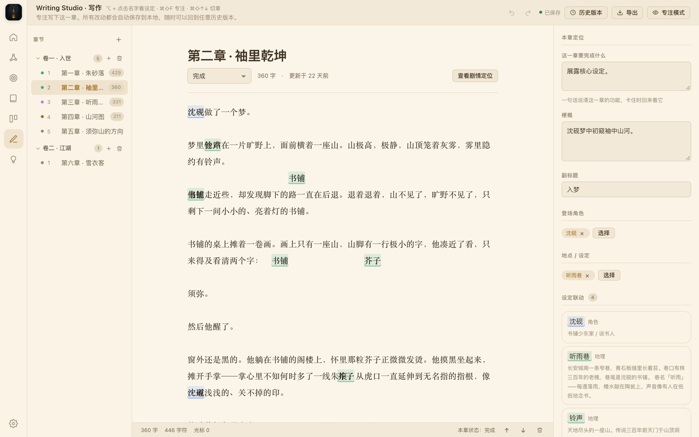
长篇小说最怕「写到后头，忘了前头」。芥子把世界拆成可维护的档案：人物、地理、势力、规则、习俗——各自独立，又彼此相连。
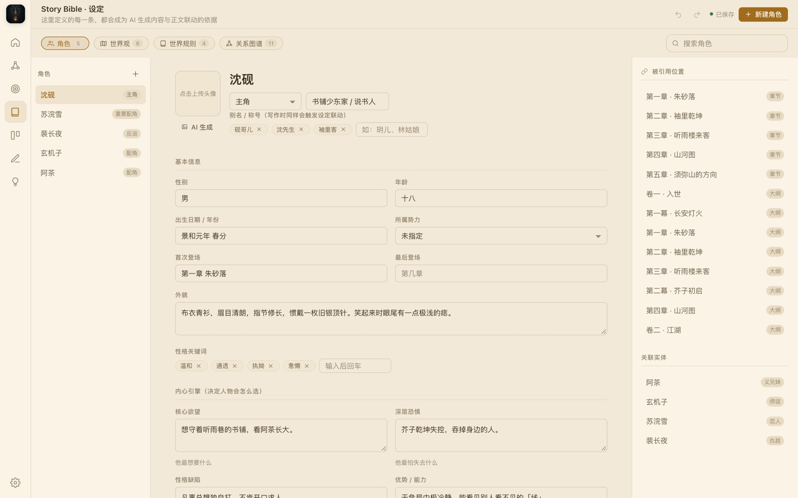
大纲不该是文档里的死表格。卷、幕、章、场景四级结构自由拖拽；多条故事线并行时，用泳道时间线分开管理，谁在推进、谁在埋伏笔，一眼看清。
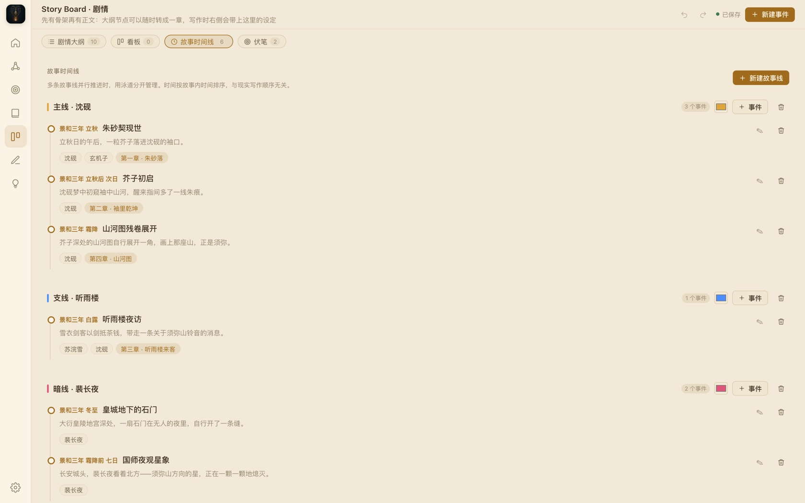
编辑器为「长时间写作」而生：宋体正文、可调行距与栏宽、夜间与护眼羊皮纸主题。设定不打断你——需要时，它自己浮上来。
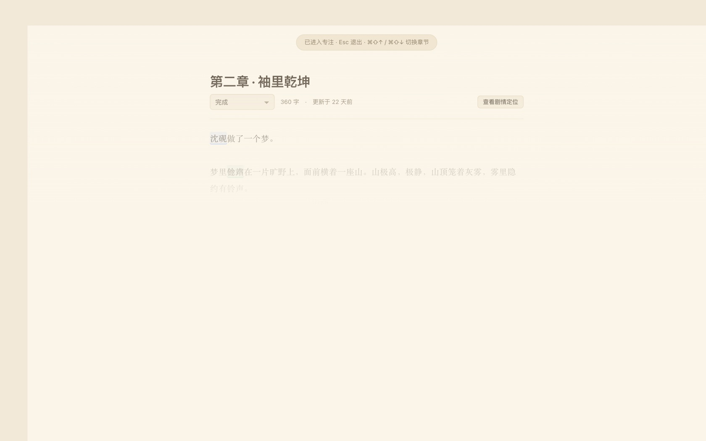
写作是长跑，需要仪表盘，也需要里程碑。驾驶舱把「我在哪、写到哪、还欠什么」摊在桌面上，让你不靠感觉写作。
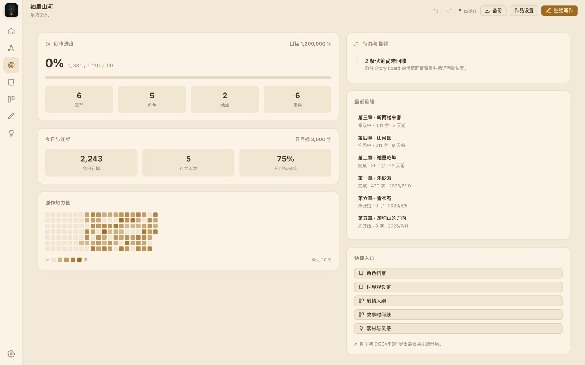
芥子内置一个可选的 AI 写作助手：续写、改写、头脑风暴、情节顾问，上下文可按「章节 / 角色 / 世界观 / 全书设定」勾选，让 AI 只看到你愿意给它看的。
不配置 API Key，全部离线功能照常使用。默认接入 DeepSeek，任何 OpenAI 兼容接口（通义、Kimi、Ollama 等）改一行 Base URL 即可。
AI 侧栏常驻而安静，需要时唤出，用完即隐——它不抢光标，不占正文。
把哪一层设定交给 AI，由你决定。章节、角色、世界观、全书设定，逐层开关。
DeepSeek 默认预设；OpenAI、通义、Kimi、火山方舟、本地 Ollama……改 Base URL 即换。
从世界观条目到伏笔台账，每一处都为了让「写」这件事更专注。
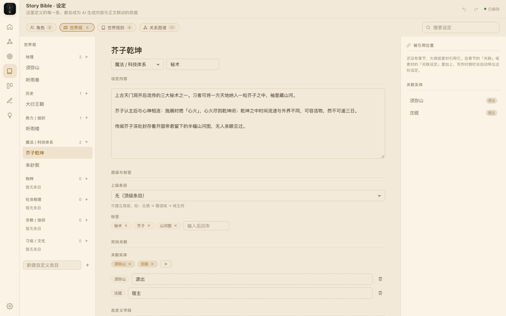
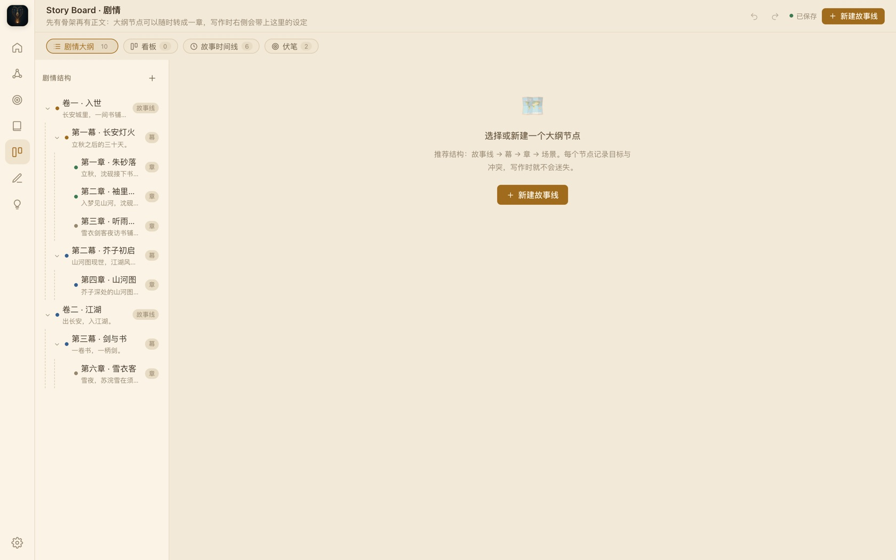
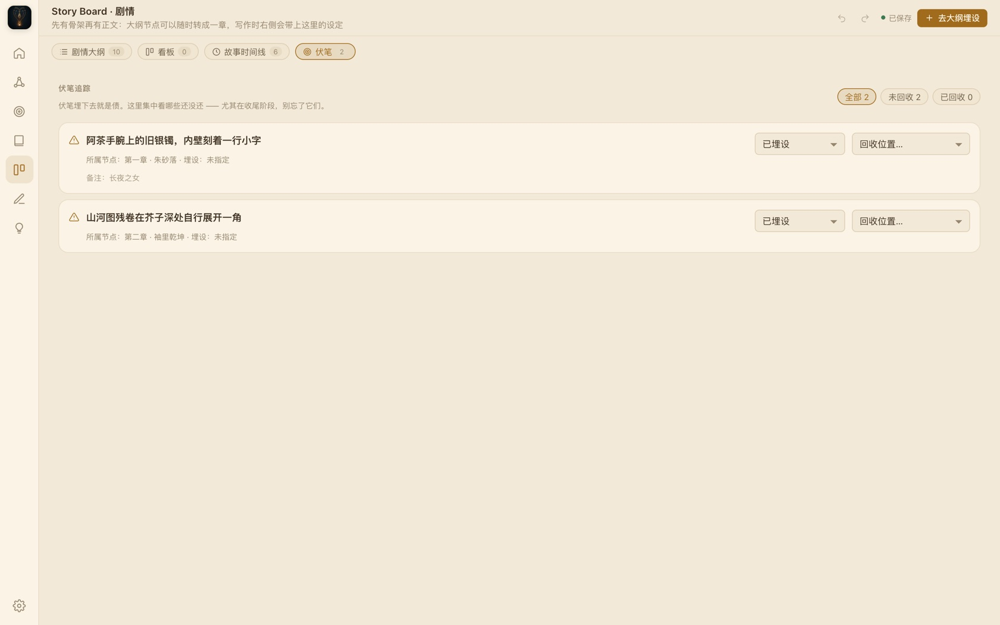
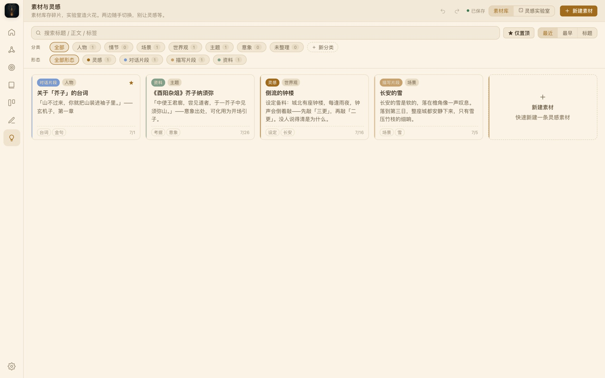
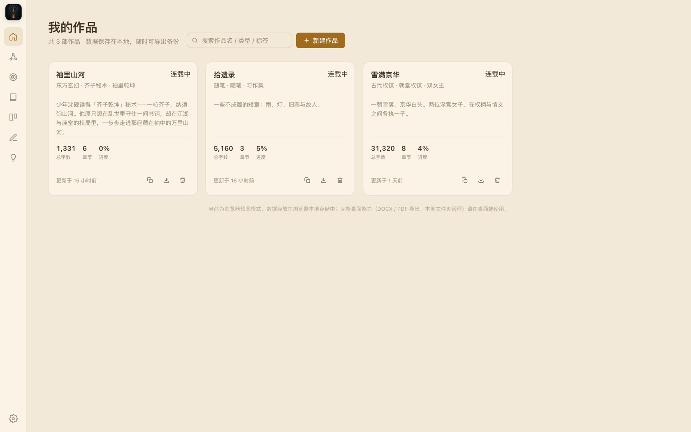
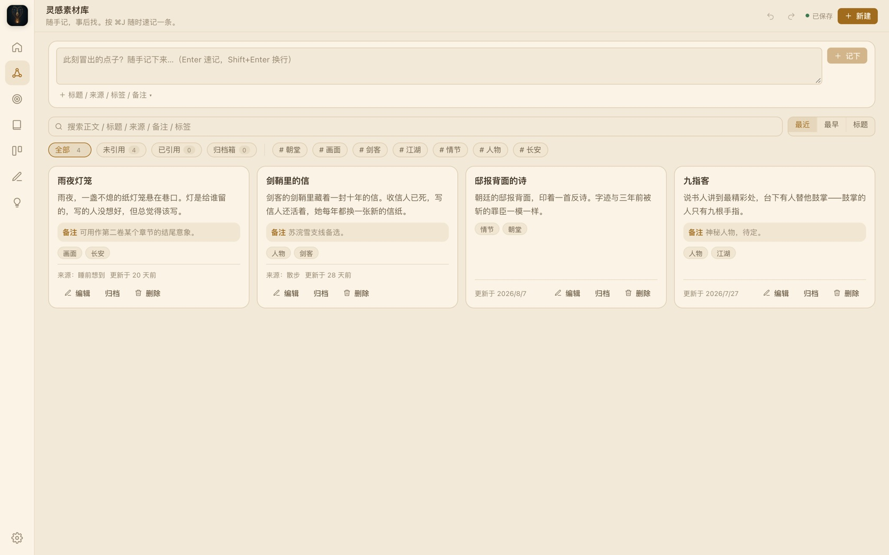
芥子的设计哲学只有一句：设定触手可及，但永不抢占注意力焦点。零上下文切换、零打断、渐进式披露。四个意象锚定这份气质——圆、山、案、印。
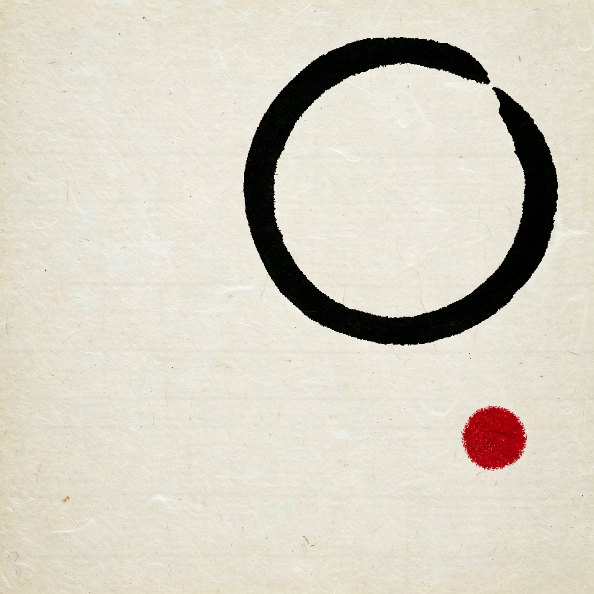
「芥子 = 一粒芥菜籽，须弥 = 一座神山。
佛法云『须弥纳芥子，芥子纳须弥』——极小中藏极大：
一个角色、一段设定，便是一整个世界。」
芥子 · 品牌本质
当前版本 v1.5.0 · 免费 · 无内购 · 不收集任何数据
系统要求：macOS 12+（Apple Silicon）· Windows 10+ 64 位 · Android 8+。 安装与排障说明见 项目 README 与 macOS 安装指南。
关于数据、联网与 AI 的几件事，先说清楚。
~/Documents/芥子：设定、大纲、时间线为 JSON，章节正文为 Markdown，全部是开放格式。可在设置页改到任意目录——比如放进 iCloud 或坚果云的同步文件夹。backups/，可一键导出整书备份。